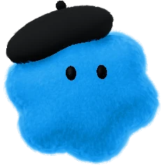

카드에 붙는 출처 아이콘(Telegram, Dots …)을 코드가 아니라 Settings 탭에서 등록·수정하도록 바꾸는 안입니다.
지금 코드에 박혀 있는 requestedBy: 'dots' → Dots Felipe, originChannel: 'telegram' → Telegram 매핑이
여기서 등록하는 출처 항목으로 바뀝니다. 오픈소스 기본값에는 개인 이름이 들어가지 않습니다.
기존 Settings 탭의 네트워크 접근 · Model Visibility 섹션 아래에 같은 카드 모양으로 추가합니다. 행마다 아이콘 · 이름 · 매칭 규칙 · 카드 수 · 켜기/끄기 · 편집이 있습니다.
카드를 누가/어디서 요청했는지 보여주는 아이콘입니다. 실행 runtime(CLAUDE · CODEX)과는 별개입니다. 직접 만든 카드에는 아무것도 붙지 않습니다.
| 출처 | 매칭 규칙 | 카드 | 표시 | |
|---|---|---|---|---|
Telegram기본 telegram |
originChannel = telegram | 12 | ||
 Dots dots |
requestedBy = dots | 5 | ||
🛰️ Slack 봇 slack-bot |
requestedBy = slack-bot | 0 | ||
S Scheduler기본 scheduler |
originChannel = scheduler | 31 |
requestedBy = qa-bot이 붙은 카드가 3개 있습니다. 등록하기 전까지 아이콘은 표시되지 않습니다.
DialogSkeleton으로 띄웁니다. 아이콘은 이미지 업로드 · 이모지 · 이니셜+색 중 하나이고, 저장 전에 실제 표시 위치 세 곳을 오른쪽에서 미리 봅니다. 사진은 21px 원형으로 잘립니다.
소문자·숫자·하이픈. 생성 후 변경 불가 — 이미 저장된 카드 값이 이걸 가리킵니다.
외부 에이전트는 POST /api/cards에 "requestedBy": "dots"를 넣어 등록합니다.
이번에 구현한 규칙을 그대로 유지합니다. 등록 항목이 늘어나도 위치 규칙은 같습니다.
보드 카드 · 리스트 행
세션 모아보기(SESSION/WORKS) 카드 행
세션 상세 턴 헤더
카드 상세 상단
WORK / SESSION 그룹 헤더
세션 상세 왼쪽 T1·T2 목차
직접 만든 카드 (user/미지정)
꺼둔 출처 · 미등록 값
Telegram으로 들어온 Dots 요청처럼 둘 다 맞으면 목록 순서대로 최대 2개. 목록에서 행을 끌어 순서를 바꿉니다.
~/.agent-kanban/origins.json 스토어(다른 도메인처럼 임시파일 원자적 쓰기 + 락). 아이콘 이미지는 ~/.agent-kanban/origin-icons/<id>.webp.CardRequester를 고정 유니온에서 등록된 ID 문자열로 넓힘. POST /api/cards는 등록된 ID(+ user)만 받고, 모르는 값은 지금처럼 400.GET/POST/PATCH/DELETE /api/origins, PUT /api/origins/:id/icon. 웹은 10초 폴링(다른 설정 화면과 같음).requestedBy 값은 그대로 두고 아이콘만 사라집니다. 같은 ID로 다시 등록하면 되살아납니다.// origins.json
{ "origins": [
{ "id": "telegram", "name": "Telegram", "match": "originChannel", "icon": { "kind": "builtin", "ref": "telegram" }, "enabled": true, "order": 0 },
{ "id": "dots", "name": "Dots", "match": "requestedBy", "icon": { "kind": "image", "file": "dots.webp" }, "enabled": true, "order": 1 },
{ "id": "slack-bot","name": "Slack 봇", "match": "requestedBy", "icon": { "kind": "emoji", "value": "🛰️" }, "enabled": true, "order": 2 }
] }